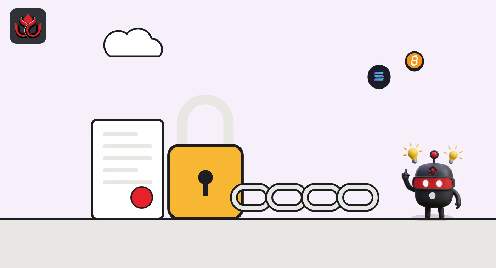
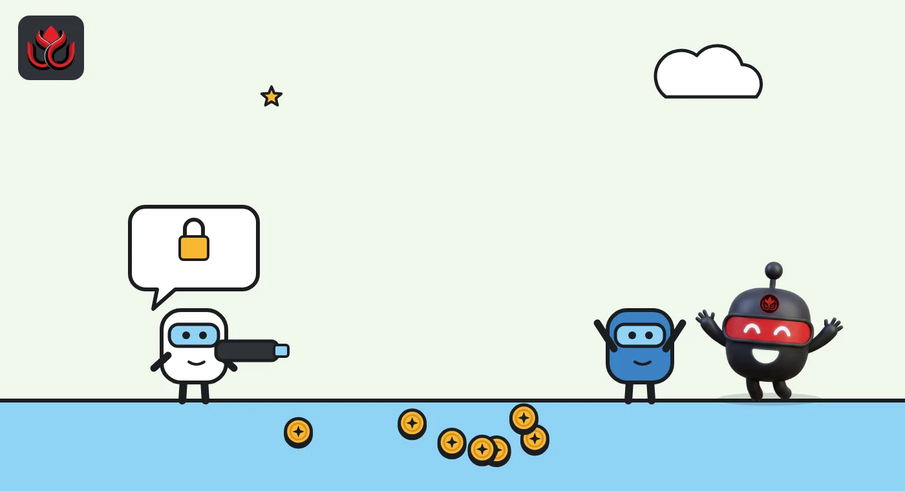

The SEC will let tokenized stocks trade in DeFi-style pools for five years. The catch?
A new SEC exemption lets approved onchain venues trade tokenized US stocks through permissioned liquidity pools without registering as exchanges. Companies can veto their own listings, volumes are capped, and only vetted users get in.
Key points
- On September 17, 2026, the SEC let approved Tokenized Securities Venues trade tokenized US stocks through permissioned AMM pools, without registering as exchanges.
- Tokens must carry the same rights as the real share, the issuing company can object to a listing, and the code must run on a public blockchain.
- The relief lasts five years. Chairman Paul Atkins called it a stopgap that must be followed by permanent rules.
What the SEC approved
On September 17, 2026, the US Securities and Exchange Commission (SEC) issued what it calls an "Innovation Exemption." For five years, it lets a new kind of platform, a Tokenized Securities Venue (TSV), trade tokenized versions of US-listed stocks without registering as an exchange. Trading happens through permissioned automated market maker (AMM) pools, the same liquidity pool design used by DeFi exchanges, but open only to approved users, the SEC said.
"NMS stock" means shares that trade on the national market system, which covers most stocks listed on US exchanges. The order also exempts certain liquidity providers from being treated as dealers when they put their own capital into these pools.
Atkins said the exemption "would allow TSVs to trade tokenized NMS stock in a permissioned environment today."
The rules venues must follow
The relief comes with a long list of conditions, according to the SEC release and the chairman's statement:
- Same rights: a tokenized share must give holders the same rights and privileges as the normal share of the same class. A "No Synthetics" condition applies.
- Issuer veto: before listing a stock tokenized by an unrelated third party, the venue must notify the company and give it a chance to object.
- Public code: smart contracts must be open to audit, publicly visible and deployed on a public, permissionless blockchain.
- Halts: trading must stop when the underlying stock is halted on its main exchange.
- Who can run one: TSVs must be US persons, follow US sanctions rules and limit trading to users who meet their access standards.
- Limits: the number of stocks and trading volume are capped. Commissioner Mark Uyeda said these caps are calibrated by "limit up, limit down" tiers.
Anti-fraud and anti-manipulation rules apply in full.

How it would work
An AMM pool replaces the classic order book. Instead of matching buyers and sellers, traders swap against a pool of two assets, for example a tokenized share and a dollar token, and a formula sets the price. Liquidity providers deposit both assets into the pool and earn fees.
The SEC used its general exemptive power under Section 36(a)(1) of the Exchange Act. Venues are exempted from the definition of an "exchange," and liquidity providers, which the order calls Covered Firms, from the definition of a "dealer" when they use their own capital, Atkins explained. Only tokenized shares created by the issuer itself, or by an unaffiliated third party, may trade.
Venues must disclose how they operate, their trading activity and the trading of their affiliates on the venue, the SEC said. Uyeda listed further conditions: public notice, transaction transparency, coordination on trading halts, books and records, and technology safeguards.
The order follows a run of SEC steps on crypto in the past year. Atkins listed a December 2025 staff no-action letter for a tokenization pilot at the Depository Trust Company, a January 2026 staff statement on tokenized securities, an April staff statement on broker-dealer registration and the August 2026 Regulation Crypto Assets proposal, in a later statement. Commissioner Hester Peirce also said the SEC is open to other models for trading tokenized securities.
What the commissioners said
Atkins presented the order as a bridge, not an end point. "Critically, this interim measure must be followed by durable rulemaking," he wrote, noting that Congress had failed to advance the CLARITY Act earlier that week.
Peirce opened her statement with "The innovation exemption has arrived." She stressed that the SEC does not assume firms become exchanges or dealers just by relying on the exemptions, that it is too early to settle their categories, and that the order is not about DeFi in general. Uyeda said regulators should not force new technology into old frameworks and asked for data-heavy comments, such as metrics and incident reports. He also said US dollar trade data, including price, size, time and pool address, will be published at regular intervals, his statement said.

What changes
Until now, trading tokenized US stocks onchain in the US has meant working inside rules built for traditional exchanges and broker-dealers. This order carves out space for AMM-style trading of real shares under federal securities law, with conditions. It runs for five years after publication, and the SEC is taking public comment on every part of it.
Timeline
Congress fails to advance the CLARITY Act, per Atkins
SEC issues the Innovation Exemption and asks for comment
Exemptions expire unless replaced by rules
LC Insight analysis
This section is our reading of the facts above, not a statement of fact.
- We think the issuer veto is the clause to watch. Most listed companies never agreed to third-party tokens of their shares, and one objection pulls a stock, so early venues may offer only a short list.
- The name oversells it. Permissioned pools, US-only operators and volume caps make this a controlled test, not open DeFi trading of stocks.
- Big regulated firms will likely move first, because they can meet the access, sanctions and disclosure rules. Smaller DeFi teams may need a regulated partner to get in.
What's next
- Publication of the order in the Federal Register, which starts the five-year clock
- The first firms to announce plans to operate a TSV
- Whether listed companies use the objection right
Disclaimer. This article is based on public information and the sources listed below as of the update time shown. It is for information only and is not investment, legal or tax advice. Figures may change as companies and authorities publish new data.
Sources
- SEC, Press release 2026-90 (September 17, 2026)
- SEC, Chairman Atkins statement on the Innovation Exemption (September 17, 2026)
- SEC, Commissioner Peirce statement (September 17, 2026)
- SEC, Commissioner Uyeda statement (September 17, 2026)
- SEC, Chairman Atkins statement on crypto custody (October 1, 2026)